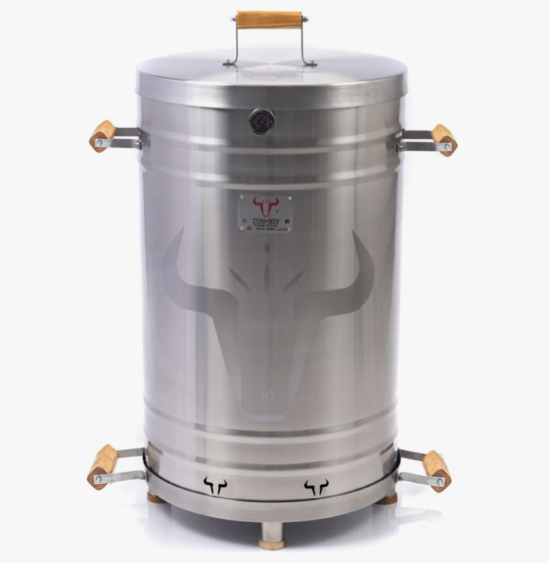
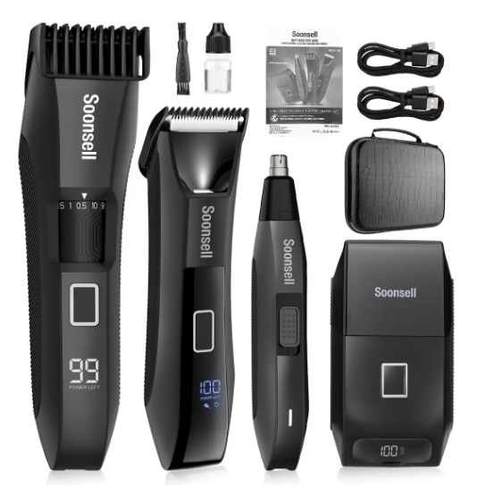
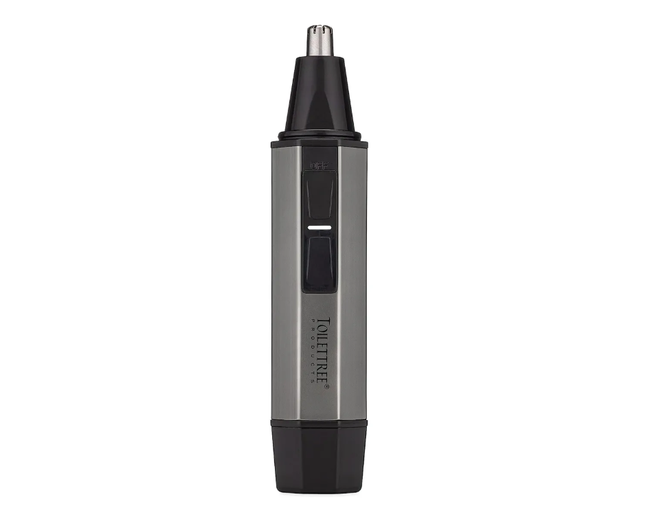
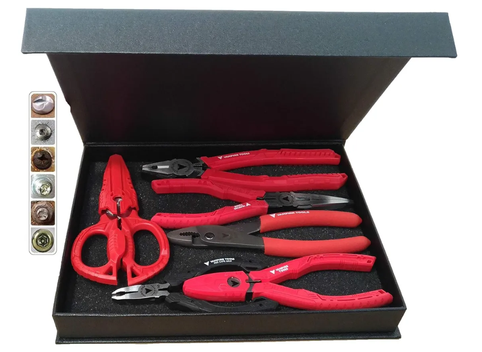
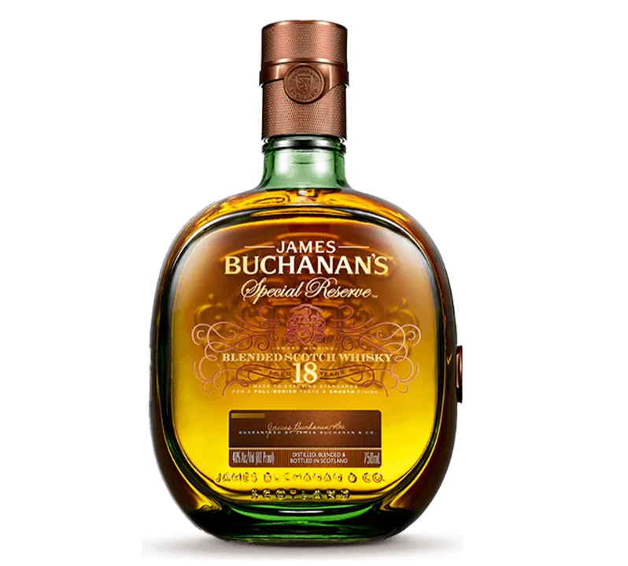
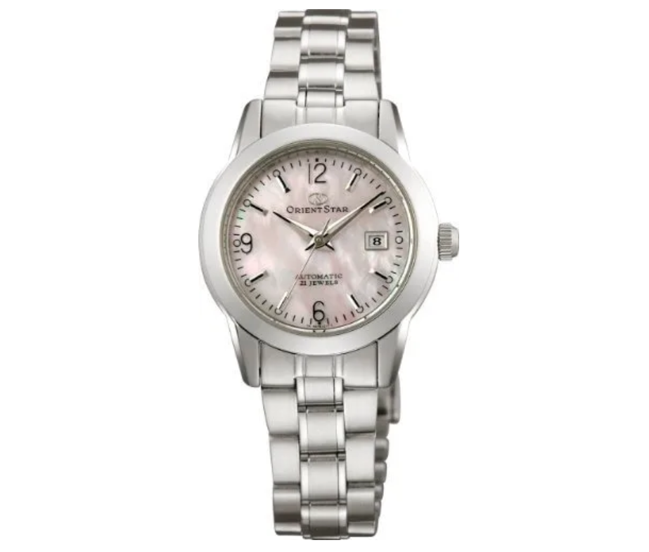
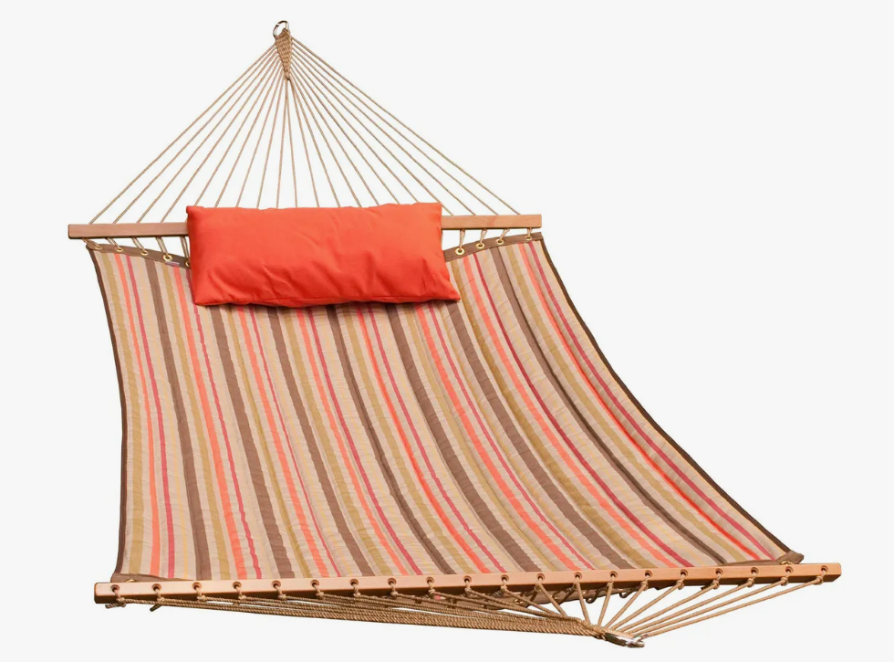
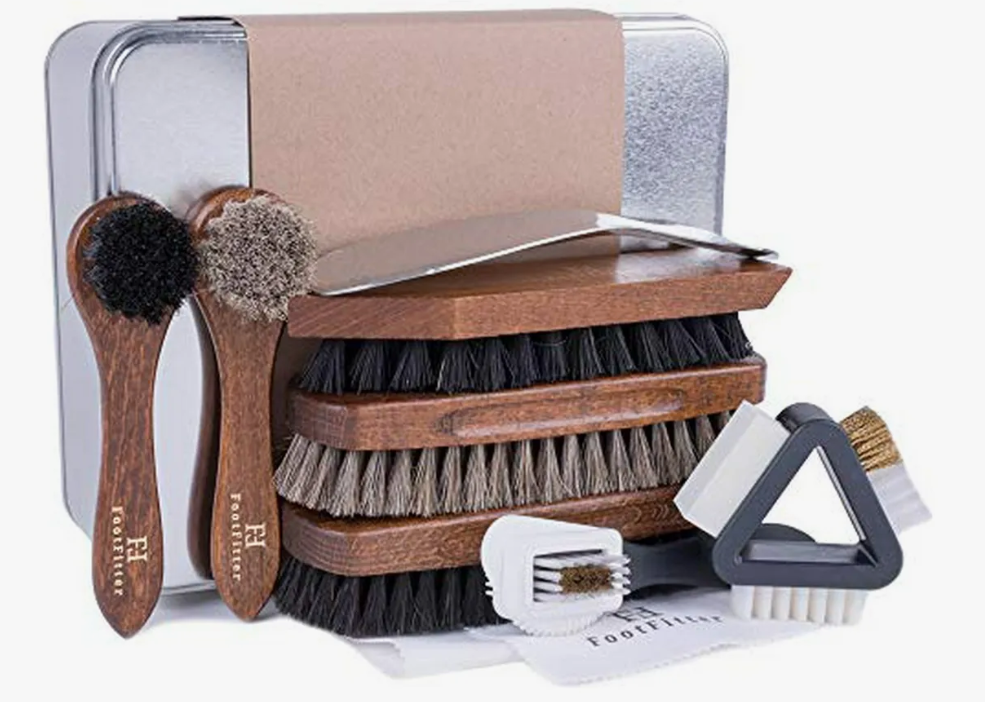
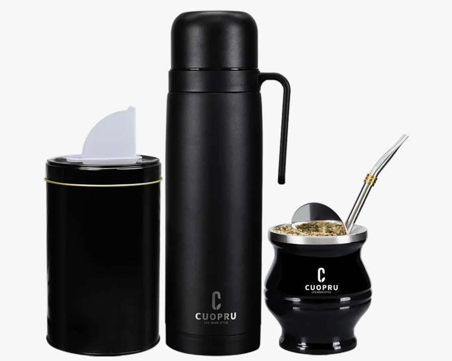
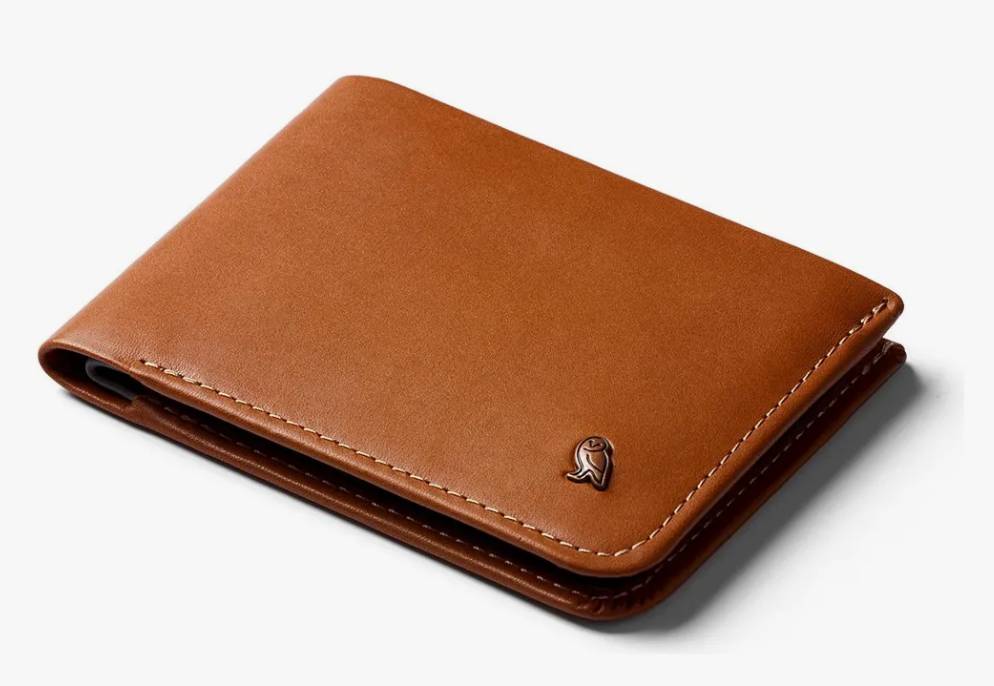

El Día del Padre se acerca y la búsqueda del regalo perfecto se convierte en una misión importante para muchos colombianos. Si estás entre los curiosos que aún no saben qué regalar, te traemos una selección con los 10 regalos más solicitados en Colombia. Desde lo tradicional hasta lo sorprendente, estas opciones harán que tu papá se sienta verdaderamente especial en su día.
1. Asador de Barril Premium
Si tu padre es amante de las buenas parrilladas y reuniones familiares al aire libre, este asador artesanal fabricado con barril reciclado será un regalo que lo dejará sin palabras. Estos asadores no solo son funcionales sino que tienen un estilo rústico que añade carácter a cualquier patio o terraza.
Cada pieza es única, fabricada por artesanos colombianos que transforman barriles en auténticas obras de arte culinario. Incluye parrilla de acero inoxidable 304 quirúrgico de alta resistencia y manijas de madera tratada para exteriores, garantizando durabilidad y seguridad durante su uso. Su tamaño jumbo de 105x57 lo hace perfecto para reuniones familiares numerosas.
Aquí en Mercado Libre puedes ver el precio del producto con grandes descuentos.
2. Kit Premium para Barba
Para los padres que cuidan su imagen y mantienen una barba bien arreglada, este kit premium es el regalo ideal. Este grooming kit 4 en 1 de Soonsell incluye todo lo necesario para un cuidado completo: recortadora de precisión, accesorios especializados para diferentes longitudes y estilos, y todo lo necesario para mantener un look impecable.
Este kit multifuncional no solo ayuda a recortar y dar forma a la barba, sino que también es útil para el cuidado general del vello facial y corporal. Su diseño ergonómico y su batería de larga duración lo convierten en un compañero ideal para el cuidado personal diario de papá.
Aquí en Mercado Libre puedes ver el precio del producto con grandes descuentos.
3. Recortador de Vello Nasal Profesional
Un regalo práctico que nunca falla es este recortador de vello nasal profesional. Este dispositivo de precisión se ha convertido en uno de los regalos más solicitados gracias a su sistema indoloro y eficiente que mantiene una apariencia impecable sin molestias.
Su diseño resistente al agua lo hace ideal para usar durante la ducha, simplificando la rutina de cuidado personal. Este recortador TTP Tri garantiza un corte preciso y seguro, sin tirones ni molestias, para que papá pueda mantener su aspecto impecable con total comodidad.
Aquí en Mercado Libre puedes ver el precio del producto con grandes descuentos.
4. Set de Herramientas Multifuncional
Para los padres que disfrutan arreglando cosas en casa o tienen ese espíritu de "hágalo usted mismo", este set de herramientas multifuncional de 6 piezas es el regalo perfecto. Este kit incluye extractores de tornillos, alicates, tijeras y otras herramientas esenciales presentadas en un elegante estuche de regalo.
Lo que hace especial a este set no es solo la calidad de sus herramientas sino también su presentación, pensada específicamente como un regalo. Las herramientas están diseñadas para ofrecer un agarre cómodo y seguro, facilitando cualquier tarea de reparación o mantenimiento en el hogar.
Aquí en Mercado Libre puedes ver el precio del producto con grandes descuentos.
5. Buchanan's Special Reserve
Un regalo clásico que nunca pasa de moda es un buen whisky, y este Buchanan's Special Reserve es una opción que impresionará hasta al catador más exigente. Este whisky escocés ha sido cuidadosamente elaborado siguiendo tradiciones centenarias para ofrecer una experiencia sensorial única.
Su sabor equilibrado con notas de vainilla, caramelo y un sutil toque de madera lo convierten en una excelente opción para disfrutar en momentos especiales. La presentación elegante de la botella lo convierte en un regalo visualmente atractivo, perfecto para sorprender a papá en su día.
Aquí en Mercado Libre puedes ver el precio del producto con grandes descuentos.
6. Reloj Orient Star Clásico y Elegante
Un buen reloj es más que un accesorio; es una declaración de estilo y sofisticación. Este modelo Orient Star con su diseño clásico y elegante complementa tanto atuendos formales como casuales, convirtiéndose en el compañero perfecto para el día a día de papá.
Su excelente manufactura garantiza precisión y fiabilidad, mientras que su diseño atemporal asegura que se mantenga impecable con el paso del tiempo. Este reloj combina la tradición relojera japonesa con detalles refinados que lo convierten en una pieza que puede ser heredada de generación en generación.
Aquí en Mercado Libre puedes ver el precio del producto con grandes descuentos.
7. Hamaca Acolchada Reversible Sunbrella
Regala momentos de descanso y tranquilidad con esta lujosa hamaca acolchada reversible Sunbrella de Algoma. Su capacidad para soportar hasta 500 libras (227 kg) la hace perfecta para un descanso seguro y confortable, ideal para esos momentos de relajación que todo padre merece.
El tejido Sunbrella es conocido por su resistencia a los elementos y su durabilidad excepcional, lo que garantiza que esta hamaca mantendrá su aspecto y funcionalidad durante años. Su diseño reversible ofrece dos opciones de color en un solo producto, adaptándose fácilmente a diferentes espacios exteriores o interiores.
Aquí en Mercado Libre puedes ver el precio del producto con grandes descuentos.
8. Set Ultimate de Cepillos para Zapatos Footfitter
Para los padres que aprecian el buen calzado y entienden que un par de zapatos bien cuidados puede durar toda una vida, este set ultimate de 10 cepillos para zapatos de Footfitter es el regalo ideal. Este completo kit incluye todo lo necesario para mantener el calzado en condiciones óptimas.
Los 10 cepillos especializados están diseñados para diferentes tipos de materiales y fases del proceso de limpieza y cuidado. Desde cepillos para aplicar cremas y pomadas hasta cepillos para pulir y dar brillo, este set garantiza que papá pueda mantener su calzado impecable en cualquier ocasión.
Aquí en Mercado Libre puedes ver el precio del producto con grandes descuentos.
9. Kit de Yerba Mate de Acero Inoxidable Premium Cuopru
Para los amantes del mate o quienes disfrutan de bebidas calientes durante el día, este kit de yerba mate de acero inoxidable premium es un regalo que combina tradición y elegancia. Fabricado con materiales de alta calidad, este set incluye todo lo necesario para disfrutar de una auténtica experiencia de mate.
El kit incluye un termo de acero inoxidable que mantiene la temperatura ideal por horas, una calabaza para mate tradicional y bombilla. Su diseño elegante y su acabado premium lo convierten en un regalo perfecto para padres que aprecian las tradiciones sudamericanas o quieren iniciarse en el mundo del mate.
Aquí en Mercado Libre puedes ver el precio del producto con grandes descuentos.
10. Billetera Bellroy Hide & Seek de Cuero Delgado
Una billetera de calidad es un accesorio que todo hombre aprecia, y esta Bellroy Hide & Seek eleva el concepto a otro nivel. Fabricada con cuero de primera calidad, esta billetera combina un diseño delgado y elegante con una funcionalidad excepcional que incluye compartimentos ocultos para mayor seguridad.
Su diseño inteligente incluye compartimentos para tarjetas, billetes y monedas, optimizando el espacio sin sacrificar la delgadez. La atención al detalle y la calidad de los materiales hacen de esta billetera un regalo duradero que papá apreciará cada día cuando la use.
Aquí en Mercado Libre puedes ver el precio del producto con grandes descuentos.